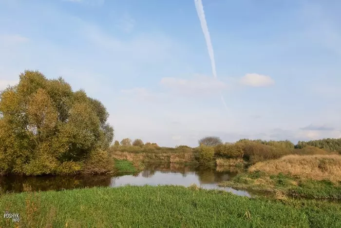
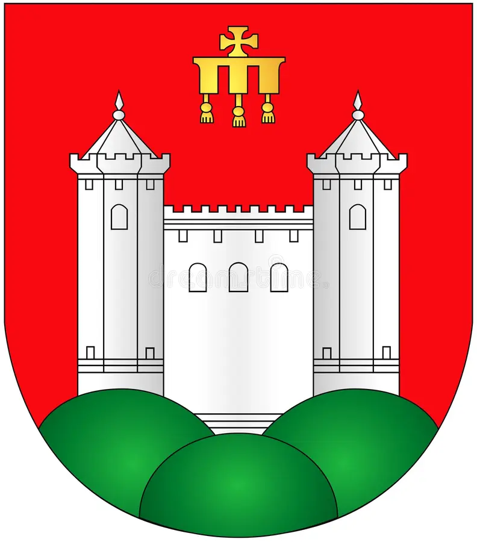

Чашники - город ЛУЧШИХ людей!
Происхождение
В летописях Чашники впервые упоминаются в 1504 году. В XVI веке город, расположенный на берегу реки с красивым названием Улла, находился в составе Полоцкого воеводства ВКЛ.
Есть несколько версий того, почему у города такое название. Согласно одной из них, город так называется из-за чашеобразной низины, в которой расположен.
Вторая версия связана с гончарным делом, когда-то здесь изготавливалось много глиняной посуды, в том числе и чашек.
Ну и третья версия предполагает, что слово «чашники» произошло от названия придворной должности и чина в хозяйстве русских князей и царей в 13-нач. 18 вв. Чашники прислуживали на праздничных обедах, заведовали пчеловодством и медоварением.
Символы
Рассмотрим герб моего города
